1.1 品牌名称
标准写法为 LiuBai；英文名称作为主识别，中文“留白”作为概念来源与说明文字使用。
一套围绕“留白空间”的蓝色视觉识别系统：厚实几何 Logo、克制蓝白色彩、编辑感版式，以及适合设计公司的数字与提案应用。
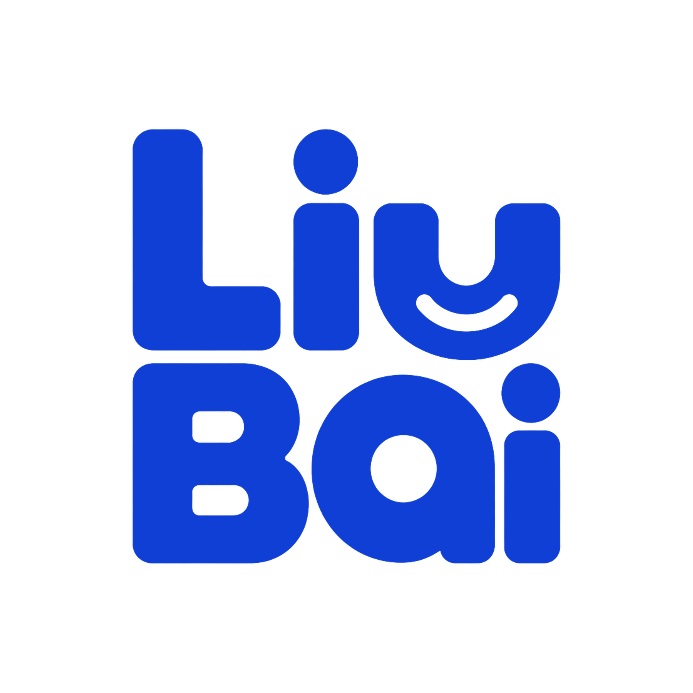
LiuBai 是一家面向创意文化品牌的高端精品视觉设计公司，以留白、秩序和温度建立清晰可延展的视觉系统。
标准写法为 LiuBai；英文名称作为主识别，中文“留白”作为概念来源与说明文字使用。
提供视觉设计、AI 设计和品牌设计服务，重点帮助客户把想法整理为可执行的识别系统。
高端精品设计工作室；服务重心在品牌视觉策略、系统化视觉资产和创意文化项目。
用克制而有趣的设计，把复杂想法转化为清楚、可记忆、可持续使用的视觉秩序。
成为创意文化品牌在 AI 时代建立视觉识别和内容系统时首选的设计伙伴。
清晰、留白、系统、好奇、温度；每一项都应能在版式、图像与交付文件中被看见。
留白空间、几何圆角、视觉秩序、AI 共创、编辑感、高级但亲近。
像一位敏锐的设计合伙人：判断明确、表达轻盈、审美干净，同时保留一点微笑感。
少说套话，多给判断；语言克制、直接、带一点温柔的机智。
已确认的 Logo 是上下堆叠的几何字标，核心记忆点来自 u 内的微笑负形与整体厚实圆角结构。
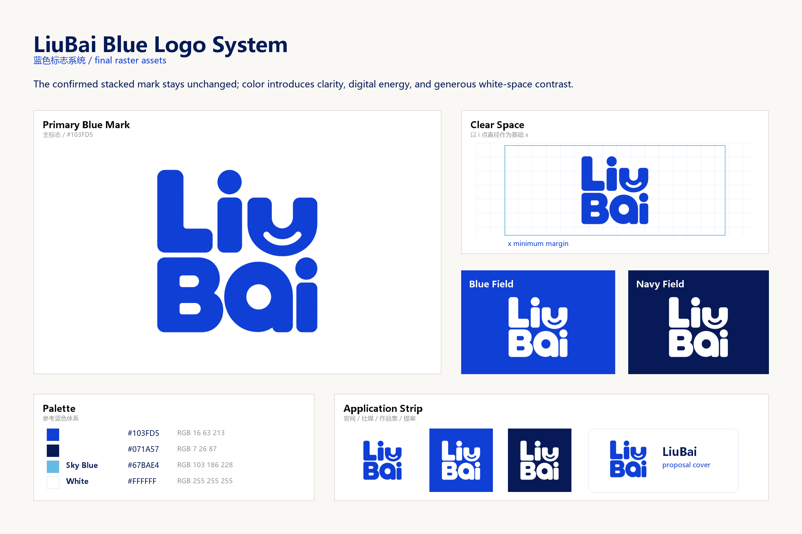
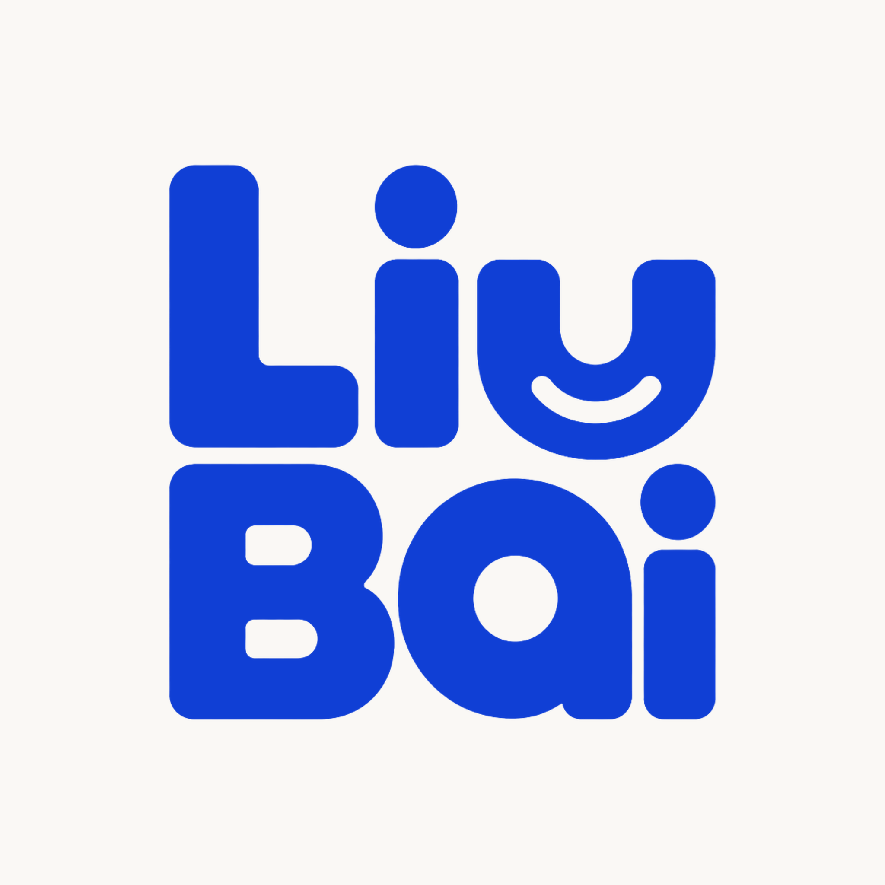
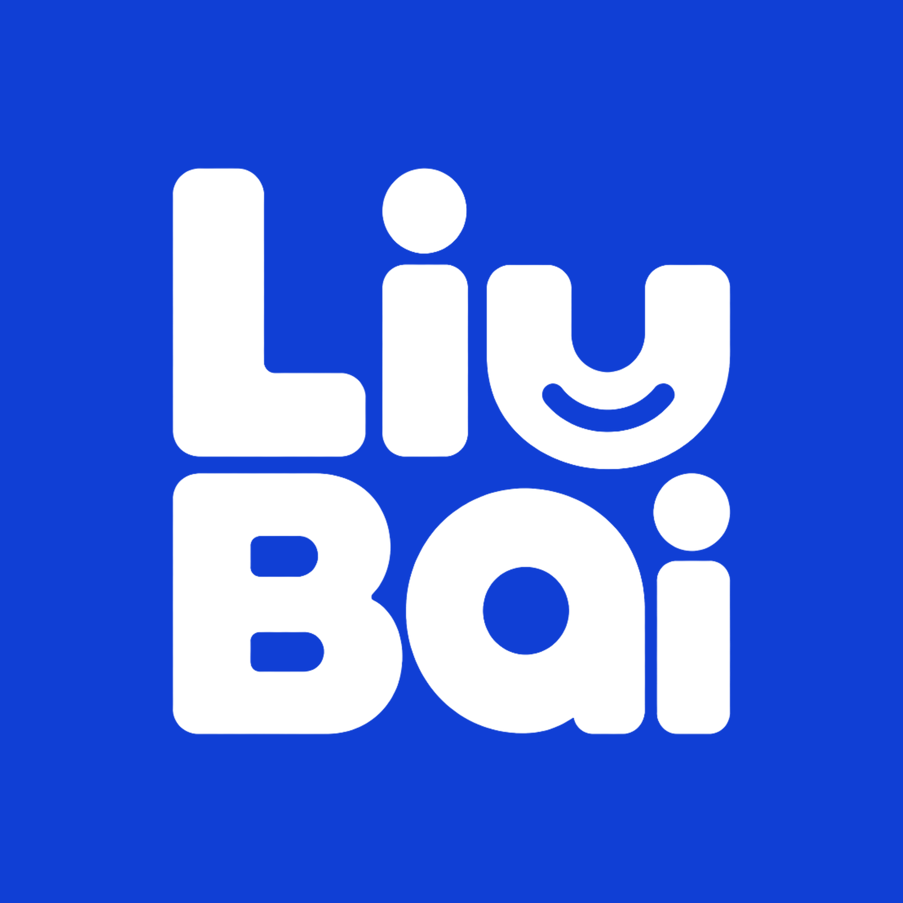
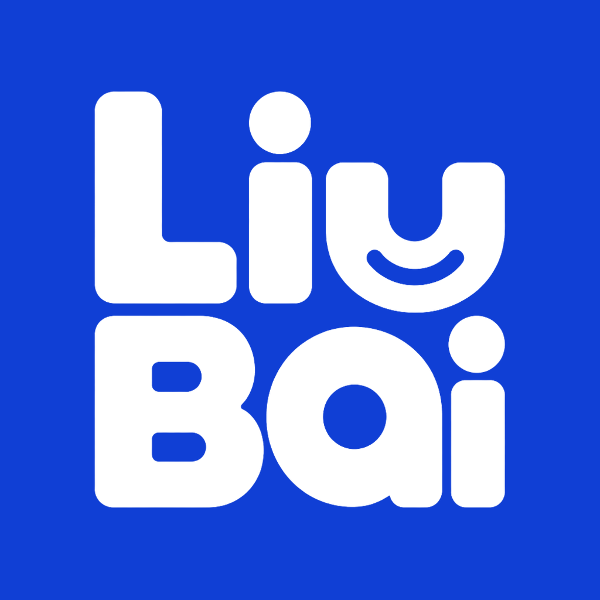
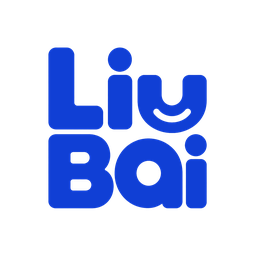
以“留白”为概念，把负空间转化为微笑表情；让设计公司的理性秩序与亲和力同时存在。
首选蓝色主标 #103FD5，使用透明底或暖白/白色背景，保持完整上下堆叠形态。
当前阶段图形标采用主标的社媒头像裁切，不拆出单独字母，避免破坏已确认识别。
字标为 LiuBai 堆叠整体，不建议重排单行字标作为主识别；单行文字只作为辅助说明。
中文“留白”不进入主 Logo，可用于品牌故事、副标题、提案内页或中文语境说明。
英文组合以 LiuBai 为唯一主写法，注意 L 与 B 的首字母大写。
中英文组合建议英文 Logo 在上，中文说明在下；中文字号不超过 Logo 高度的 12%。
横版用于网站导航和邮件签名：左侧放头像式 Logo，右侧放 LiuBai 与业务描述。
竖版即当前主标结构，适合封面、头像、海报主视觉和空间墙面。
96px 以上使用完整主标；64px 以下优先使用头像裁切并保留足够蓝白对比。
App Icon 用蓝底反白或暖白底蓝标，圆角容器不改变 Logo 自身轮廓。
Favicon 使用蓝色透明底 PNG；低于 64px 时检查微笑负形是否仍可辨识。
Logo 规范重点保护比例、负形和周围留白，任何应用都不能重画或挤压已确认图形。
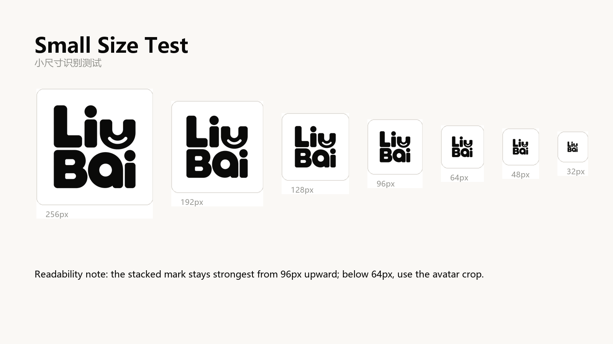
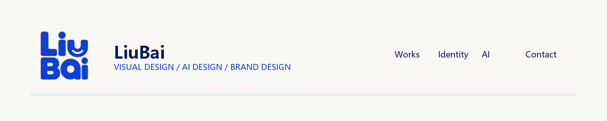
保持原始图像比例，不拉伸、不压缩、不单独放大某个字母。
网格只用于说明构成关系，不用于重新修正字形；以现有图像为最终形态依据。
以 i 点直径为 x，四周至少保留 1x 空间；封面和头像建议保留 1.5x。
屏幕最小建议 64px；印刷最小建议 18mm；低于该尺寸时使用头像裁切。
辅助文字高度不超过 Logo 高度 12%，间距不小于 0.6x。
浅底使用蓝色或黑色；蓝底/深蓝底使用白色反白版。
只放在低噪声、留白充足区域；必要时加白色/深蓝承载底，不直接叠在复杂照片上。
禁止描边、阴影、渐变填充、旋转、拆字、替换字体、改变微笑负形或任意压缩。
色彩参考已确认蓝色样张：高饱和主蓝承担识别，深蓝提供专业深度，浅蓝只做精确辅助。
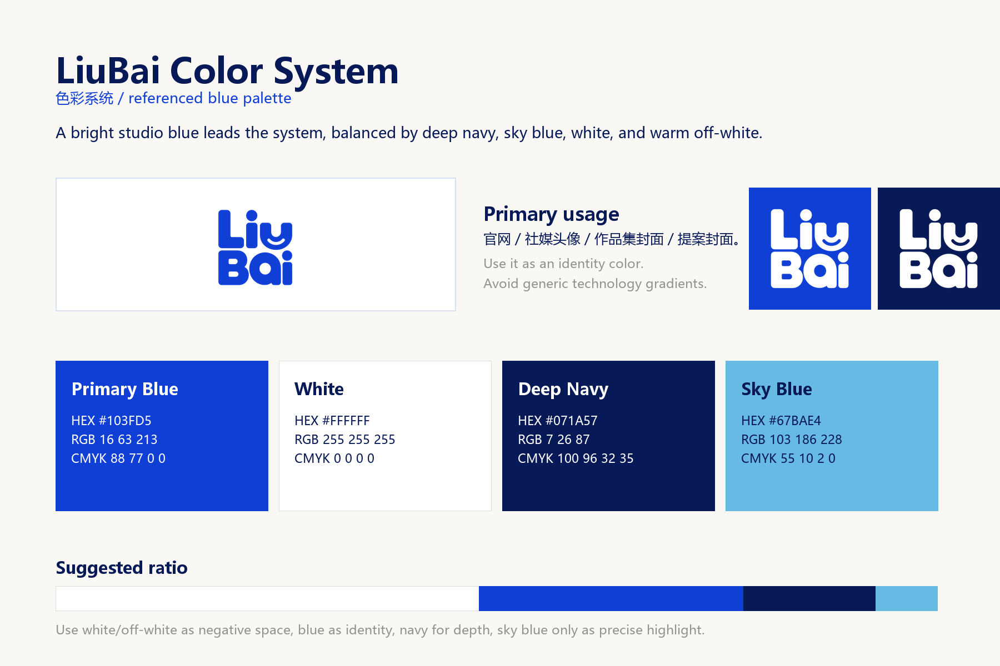
Primary Blue #103FD5；用于主 Logo、关键按钮、封面主色块和社媒识别区。
Deep Navy #071A57；用于标题、深色背景、提案封面和高对比文本。
Sky Blue #67BAE4；用于提示线、局部数据、状态点和图形细节，比例保持克制。
Black #0A0A09、Ink #09153F、Gray #8E8F94、Line #DAE1EF。
White #FFFFFF 与 Off-white #FAF8F5；白色与暖白是“留白”概念的主要视觉载体。
成功可用 Sky Blue 的浅色延展；警示和错误不纳入品牌主视觉，仅用于功能界面。
手册给出 HEX/RGB/CMYK；Pantone 需打样后锁定，初稿建议以近似亮蓝专色测试。
建议白/暖白 48%，主蓝 30%，深蓝 15%，浅蓝 7%。
深蓝为底，Logo 用白色；主蓝用于焦点和链接，不大面积叠加渐变。
暖白或白色为底，Logo 用主蓝；标题可用深蓝，正文用 Ink。
禁止泛科技紫蓝渐变、低对比浅蓝正文、过量单色蓝铺满以及随意换成荧光蓝。
字体系统服务于设计公司的编辑感：标题稳、正文清楚、数字和标签具有工具感。
Visual Design / AI Design / Brand Design / 0123456789
品牌视觉、AI 图像系统、作品集与提案设计。
建议使用 HarmonyOS Sans SC / 思源黑体 / 微软雅黑 Bold，字重 700。
建议使用 HarmonyOS Sans SC / 思源黑体 / 微软雅黑 Regular，字重 400。
可参考 Codec Pro 的几何圆润气质；实际落地可用 Inter / Avenir Next / Arial Rounded 替代。
Inter / Helvetica Neue / Arial；用于正文、导航、规范说明和设计 token。
数字与英文字体保持一致，表格和规格建议使用 Tabular lining numerals。
系统环境优先使用 Microsoft YaHei + Arial；网页可用 CSS fallback。
封面 72/84，章节标题 44/56，模块标题 24/32，正文 16/26，标签 12/18。
标题 700，强调 600，正文 400；避免极细字重削弱 Logo 的厚实感。
标题行距 1.08-1.16，正文行距 1.55-1.7，中文长文不低于 1.6。
英文品牌名与中文之间保留半角空格；专业词汇首次出现可保留英文原文。
禁用书法、宋体复古装饰、过度圆润儿童字体和赛博科技显示字体。
图形语言来自 Logo 的圆角、块面和负空间，用“白色窗口”组织信息，而不是堆装饰。
使用圆角块面、微笑弧线、x 空间框和网格线作为辅助图形。
可从 Logo 的圆点、圆角矩形和弧线提取重复纹样，密度保持低。
装饰元素必须承担分区、引导或强调功能；不使用无意义漂浮图形。
背景可用浅蓝网格或大面积留白，线宽细、对比低。
从 i 点直径、u 微笑弧线和字母圆角提取尺寸关系；所有图形保持统一半径。
用于封面分割、社媒模板边界、PPT 页码、作品集水印和导视箭头背景。
禁止星芒、印章、毛笔纹理、复杂渐变光效和过度可爱表情化。
图标应像设计工具的界面元素，清楚、轻量、统一半径，与厚 Logo 保持层级差。
线性几何图标，端点圆角，避免卡通化。
基础 24px 网格，核心形态落在 20px 区域内。
常用 16/20/24/32px；官网导航不低于 20px。
24px 图标线宽 1.75-2px；大尺寸可扩展至 2.5px。
圆角与 Logo 的柔和气质相呼应，但不复制厚重字形。
作品、AI、品牌、联系、下载、复制、播放等功能图标应优先使用统一库。
状态点使用主蓝/浅蓝/灰色，错误色仅限功能反馈。
禁止不同线宽混用、填充图标与线性图标混排、随机表情符号化。
图像风格要有设计行业的编辑判断：干净、真实、可展示过程，也能容纳 AI 生成实验。
偏自然光、干净背景、真实设计过程和作品细节，保留画面呼吸感。
产品即设计成果：品牌手册、海报、界面、视觉系统板，拍摄需正视角或轻微俯拍。
人物出现时以工作状态、讨论、评审为主，不做夸张商业大片。
如需插画，使用几何块面和负空间关系，不使用儿童化涂鸦。
当前品牌主系统不依赖 3D；如用于 AI 设计展示，应保持白底、低材质噪声。
AI 图像应像视觉实验样张，强调构图、材质和秩序，而不是炫技。
大留白、清晰对齐、主体偏左或居中，避免全画面填满。
柔和自然阴影，避免霓虹、强烈眩光和科技感光束。
禁用模板感办公照片、过度虚化背景、无关抽象球体和难以识别的 AI 画面。
版式是 LiuBai 的核心表达：用秩序制造空间，让关键信息像 Logo 的负形一样被看见。
桌面端 12 栏，移动端 4 栏；内容区最大宽度 1280px。
桌面外边距 80-120px，移动端 24px；封面可加大留白。
使用 8px 基础倍数：16/24/40/64/96。
留白不是空缺，而是分组和强调；每屏至少保留一个明确的安静区域。
标题短句优先，使用左对齐或大面积居中，避免堆叠过多副标题。
图片和文字不要平均分配，优先一强一弱的编辑节奏。
数据使用深蓝标题、主蓝重点、浅蓝辅助线；表格避免重边框。
一张图一个中心观点，Logo 不抢内容主角，保留稳定签名区。
标题页大留白，内容页使用强网格；每页只保留一个主判断。
禁止满屏填充、过密装饰、文字贴边、按钮和 Logo 抢层级。
虽然 LiuBai 是设计公司，官网、客户门户和 AI 设计工具展示都需要可执行的数字视觉规则。
按钮主色 #103FD5，标题 #071A57，背景 #FFFFFF/#FAF8F5，辅助线 #DAE1EF。
中文 Microsoft YaHei / HarmonyOS Sans；英文 Inter / Arial。
基础间距 8px；组件内 12/16/24，页面段落 64/96。
按钮和输入框 8px；大型面板 8px；Logo 容器不超过 12px。
少用阴影，优先边线分层；浮层阴影透明度不超过 14%。
浅色模式为主；深色模式使用 Navy 底和白色 Logo。
主按钮蓝底白字，次按钮白底深蓝字，禁用状态降低透明度。
白底细边线，焦点边线主蓝；错误状态只用于表单反馈。
卡片用于项目、文章、案例条目；不要把页面大区块都做成卡片。
弹窗只承载确认、下载和表单；宽度不超过 560px。
导航保持轻量，Logo 左置，主操作右置；移动端折叠菜单。
使用微笑弧线或 i 点作为加载提示，动画不超过 1.2s。
提供颜色、字体、间距、圆角、阴影和导出尺寸 token，便于官网实现。
动效只用来解释“留白出现”的过程：点落下、微笑打开、Logo 收束。
建议 3 步：i 点落位，u 微笑弧线出现，整体字标显现。
使用 i 点轻微跳动或微笑弧线描绘，避免复杂粒子。
页面转场以 160-240ms 淡入和轻微位移为主。
按钮 hover 轻微上移 1-2px，active 回落。
线性图标可做 120-180ms 的描边或颜色反馈。
片头 2-3 秒，白底或蓝底，Logo 居中出现。
片尾保留联系方式和 Logo，主蓝底或暖白底。
微交互 120-240ms；Logo 出场 600-900ms；页面转场 180-320ms。
推荐 cubic-bezier(.2,.8,.2,1)，干净、有弹性但不过度。
禁用弹跳过大、旋转 Logo、发光扫光和随机粒子动效。
办公物料体现精品工作室的可信度，重点是提案、合同、报价和项目交付体验。
白底蓝标，信息左对齐；反面可用主蓝底反白 Logo。
适配微信、邮件签名和官网联系页，Logo 使用 96px 头像版。
顶部左侧 Logo，底部用浅蓝细线和联系信息。
当前阶段低频使用；如制作，保持白底、左上角蓝标。
主蓝或深蓝封面，反白 Logo 居中或左上。
标题深蓝，章节编号主蓝，正文高可读。
价格和阶段用主蓝强调，表格边线用浅灰蓝。
小型蓝标 + 姓名 + 职能，照片区域保持简洁。
封面大留白，章节页主蓝色块，内容页使用 12 栏网格。
保留页眉 Logo 与页脚项目信息，正文使用系统字体。
头像式 Logo、姓名、业务范围和联系方式，避免图片过大。
宣传物料要像设计作品展示，而不是普通广告；重点展示判断、过程和结果。
使用大字号短句 + Logo 签名区，保留强烈留白。
服务型品牌的“产品”是设计服务包，可展示品牌设计、AI 视觉和视觉系统。
信息分层清楚：服务、方法、案例、联系方式。
用于对外介绍 LiuBai 方法论和作品方向，沿用本 VI 的排版系统。
可转译为服务手册，列出服务模块、交付物和流程。
当前不作为主触点；如用于合作招募，保持专业提案风格。
用于展会/讲座，Logo 不低于画面宽度 18%，标题留足空间。
使用深蓝底反白 Logo，提高远距离识别。
Logo 可作为重复签名，但密度不宜过高。
适合工作坊、展览、发布会，采用白底蓝字与轻网格。
数字媒体是 LiuBai 的主战场：官网、作品集、社媒、视频封面都应先让人看到清楚的设计判断。
首屏直接出现 Logo 与服务定位，作品入口清晰，避免营销式空话。
Hero 使用真实作品/视觉系统图或强排版，不用无意义抽象背景。
可用于展示 AI 设计流程、案例系统和客户交付界面。
以服务交付物 mockup 为主：手册、提案、网站、社媒模板。
使用蓝底反白或暖白底蓝标，保证圆形裁切安全。
一图一个标题，Logo 作签名，主蓝控制在 30%-50%。
图文教程式版式，使用浅蓝线框和深蓝标题。
标题不超过 12 字，Logo 保留在固定角位。
可更强对比，但不要使用过多贴纸式装饰。
适合白底大标题 + 右侧 Logo 或案例图。
当前为可选触点；用于设计课/分享时按课程封面规范执行。
若未来做课程产品，沿用服务手册系统，不另起一套风格。
建立案例复盘、AI 实验、品牌观察、方法论四类模板。
LiuBai 不是消费品品牌，包装系统主要作为项目交付包、礼品包和工作坊材料使用。
用于项目交付盒，主蓝或白底，Logo 居中或左上。
低频使用；快递外箱只保留小 Logo 与项目编号。
白色帆布或纸袋配蓝色 Logo，适合活动与交付。
可转译为项目标签：Project No.、Client、Date、System Type。
用于周边或活动物料，不作为主传播元素。
蓝标、微笑弧线、x 留白框三类贴纸。
白底蓝字，保留一句短感谢和项目签名。
可作为交付说明书，列出资产使用规则和文件结构。
不适用当前设计服务主业；若未来有实体周边，可改为品质卡。
不适用当前阶段；版权/授权可用数字水印和文件签名替代。
建议哑光纸、单色印刷、局部 UV 或压凹，避免亮面廉价感。
白卡纸、未涂布纸、蓝色特种纸和白色帆布为优先。
空间应用应像工作室导视，而不是商业门店招牌；蓝色提供识别，留白提供质感。
深蓝或白底蓝标，比例清楚，远距离可读。
白墙 + 蓝色 Logo + 小号服务描述，避免满墙图案。
使用线性图标与浅蓝引导线，文字深蓝。
编号系统用主蓝圆点，房间名用深蓝字。
大面积白底，主蓝识别墙，作品图集中陈列。
Logo 居左，活动名称为主视觉，二维码区域不抢色。
仅建议用于活动/展览，反白 Logo + 短句。
不适用当前设计公司主触点；如确有需求，使用极简蓝白标识。
不适用常规业务；可转译为临时快闪/展览视觉。
周边不应喧宾夺主，适合作为客户礼品、活动物料和团队识别。
白色或深蓝，左胸小 Logo，背后可放一句短品牌语。
低频使用；刺绣时优先用简化头像版。
白色帆布 + 主蓝 Logo，适合活动和交付包。
白杯蓝标或深蓝杯白标，Logo 不绕杯身变形。
包含 Logo、微笑弧线、留白框、项目编号贴。
圆形裁切使用头像版，保持边缘安全空间。
封面蓝底反白或白底蓝标，内页用浅蓝网格。
可选触点；只用小 Logo 或弧线，不做满版花纹。
适合设计工作室自用；白底网格 + 蓝色角标。
主蓝底白字，Logo 间距不低于 1x。
应用展示覆盖工作室真实触点：官网、社媒、提案、办公、海报、空间和交付包。
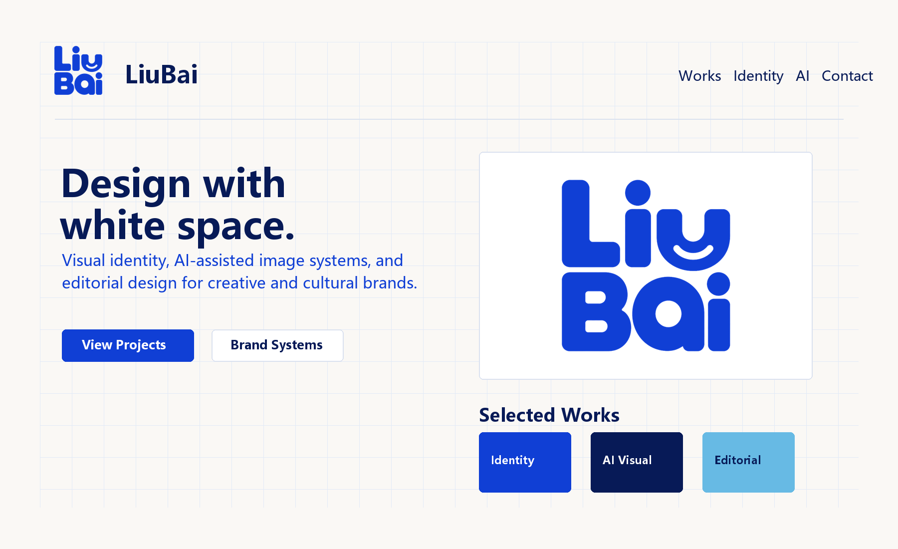
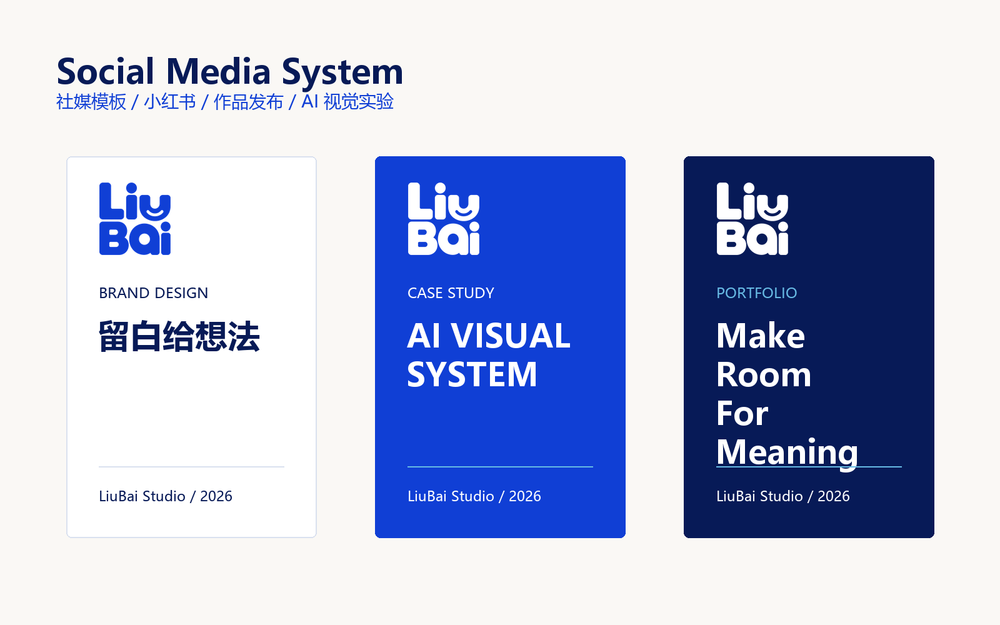
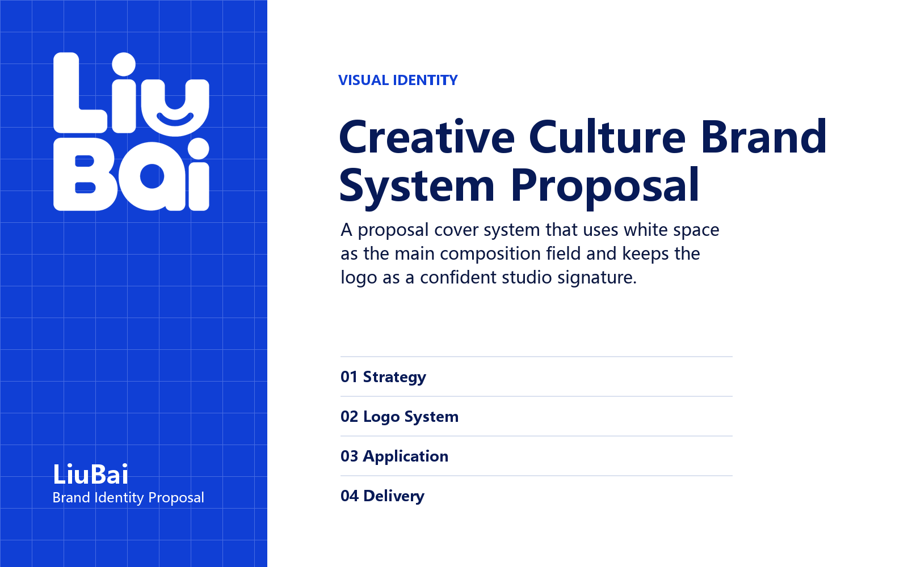
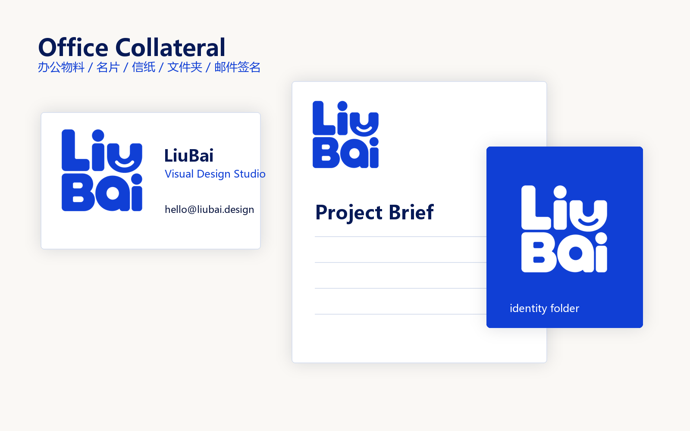
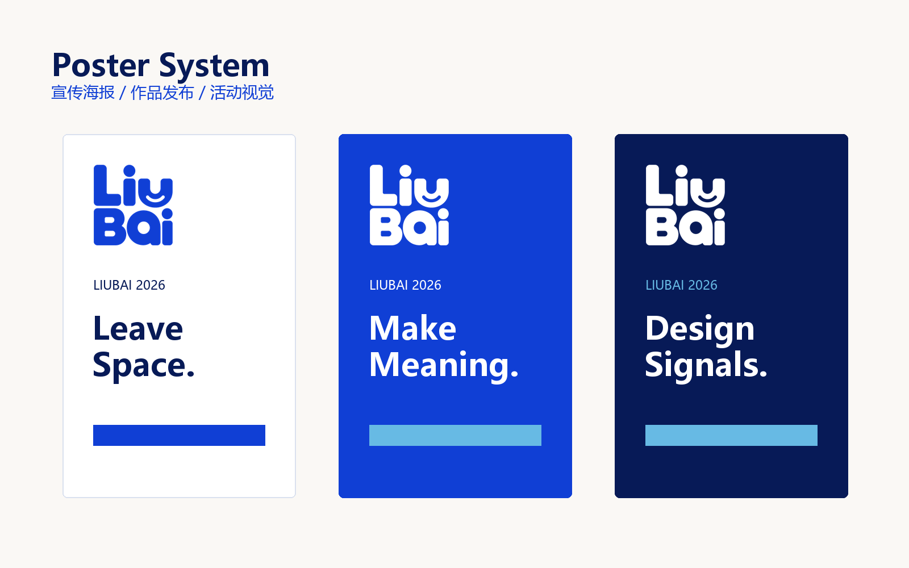
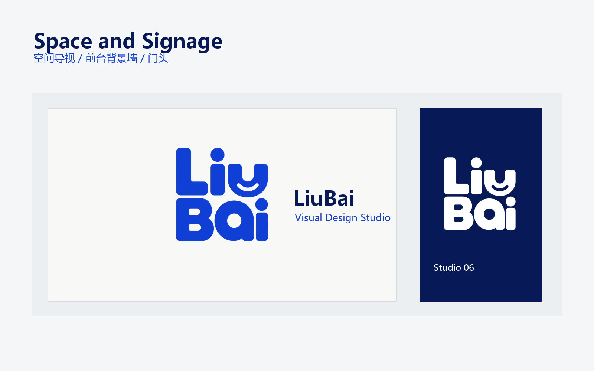
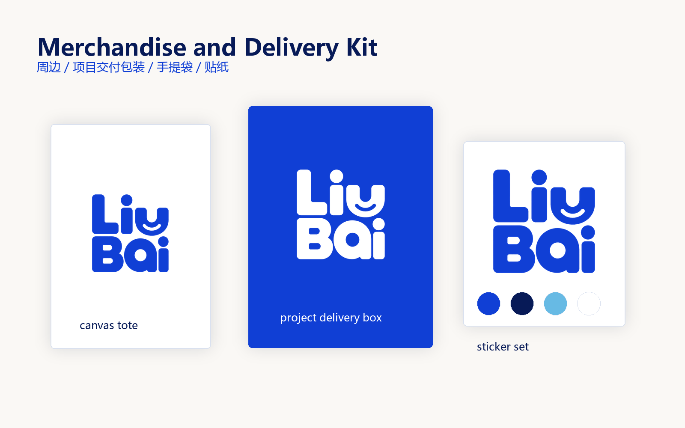
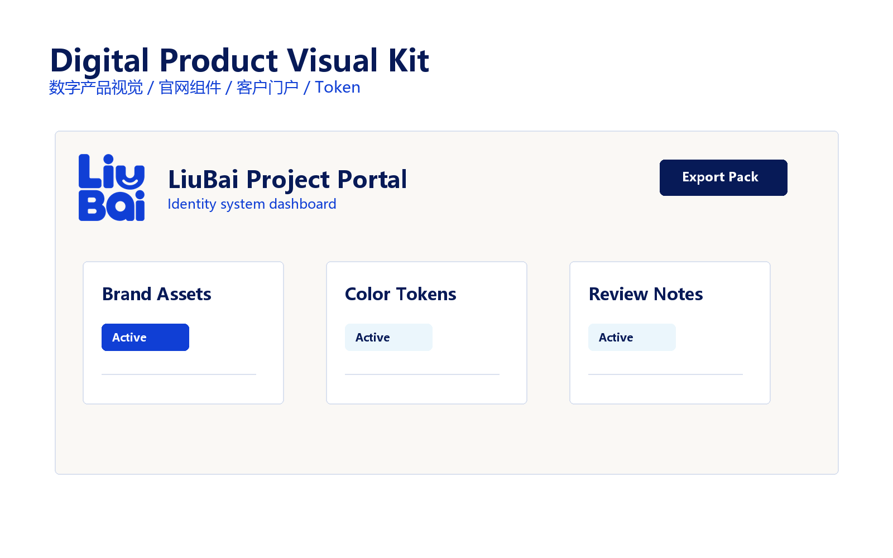
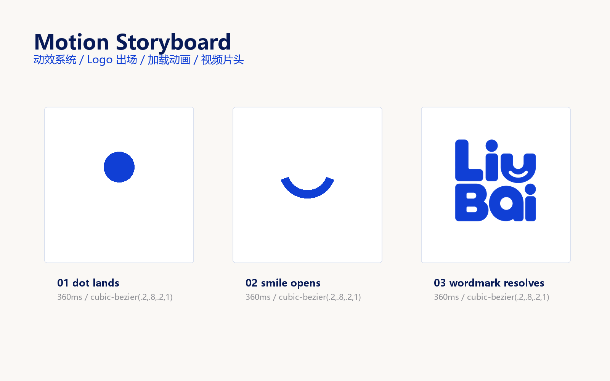
名片、信纸、文件夹、邮件签名形成稳定商务触点。
海报和活动视觉使用强版式，不做模板化宣传。
官网、客户门户、社媒模板优先使用蓝白系统。
以项目交付盒、手提袋、贴纸和感谢卡呈现。
前台墙、门头、会议室和展会背景墙保持简洁。
帆布袋、笔记本、贴纸和马克杯作为轻量延展。
头像、封面、内容模板、视频封面保持同一签名区。
服务产品化展示：品牌包、AI 视觉包、作品集系统。
禁用规范保护 Logo 的整体性，也保护 LiuBai 不滑向普通科技公司或传统文化品牌。
禁止拉伸、拆字、描边、阴影、改变 u 微笑负形和替换字体。
禁止紫蓝渐变、荧光色、低对比浅蓝正文和随意变色。
禁止书法、印章、童趣圆体、赛博显示字体和复杂衬线标题。
禁止满版堆信息、无留白、文字贴边和多中心层级。
禁止星芒、毛笔纹理、复杂科技线网和无功能装饰。
禁止模板感办公照、过度虚化、无关抽象图和低质 AI 图。
禁止过度圆角、重阴影、按钮泛滥和不可访问低对比。
联名时 Logo 不得低于对方标识视觉权重的 80%，且需保持安全空间。
交付文件必须让客户能直接用，也让后续设计师能继续维护。
Logo 以 PNG 为主：透明底、白底、蓝底反白、深蓝底反白和 favicon 尺寸。
使用 liubai-logo-[type]-[color]-[size].png；应用图使用 liubai-app-[touchpoint].png。
logo-final/assets 存 Logo；vi-manual/assets 存手册用图；scripts 存生成脚本。
当前最终 Logo 源是已确认图像，不提供 SVG 重构版本。
商业字体如 Codec Pro 需另行确认授权；系统替代字体可作为落地 fallback。
印刷前需按实际纸张与工艺测试 CMYK 和专色，不直接以屏幕蓝作为最终印刷标准。
网站和社媒优先使用 PNG；小图标需单独测试 64/128/256/512px。
VI 不是一次性图片包，需要有资产负责人、审批方式和版本记录。
指定一位内部负责人管理 Logo、模板、字体授权和外部使用申请。
对外传播物料、联名露出和大型活动应用需经品牌负责人确认。
外部设计师和供应商只能使用交付包内资产，不得自行重绘 Logo。
联名版式需先确认双方权重、背景色和安全空间。
每次 Logo、色彩、字体或模板调整都记录日期、版本号和变更原因。
资产包建议通过共享文件夹或官网下载页统一发放。
常见问题包括：可否换色、可否裁切、可否做单行版、印刷蓝如何校准。